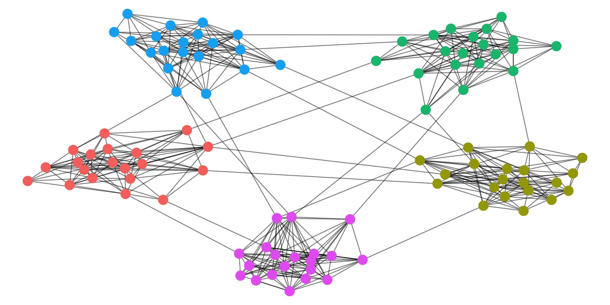

Fundamentals of Network Analysis
Betweenness Centrality
- A node has a high betweenness centrality if it is used as a step along many of the shortest paths in a network.

Betweenness centrality

Betweenness centrality

Betweenness centrality

Betweenness centrality

Closeness centrality

Density
- The density of a network is defined as the fraction of edges which are present out of the total possible number of connections.
- (a) has four edges. Full graph (b) has six.
- Density = 4/6 (.6666…)

Degree distribution

Modularity
- Community detection algorithms work by trying to maximise this value.

Louvain Community Detection
- The Louvain algorithm is one algorithm which uses modularity, developed specifically for use in large graphs.
- Each node is temporarily moved to the community of each of its neighbours, and the modularity of the whole graph is re-checked.
- This continues until modularity does not increase any more.

Triads - directed networks

Structural Holes
- The sociologist Ronald Burt, in his book Structural Holes: The Social Structure of Competition theorised that these gaps could be beneficial to individuals, and that people with many of these kinds of relationships were often successful in business.

Brokerage
Another influential paper, by Gould and Fernandez, used triads in their theory of brokerage.
This is a process, according them, where individuals act as intermediaries in a network, helping to share information.
They identify five types of brokerage roles, based on specific triad types, as seen in the image below:

Social network concepts: triadic closure, transitivity, brokerage